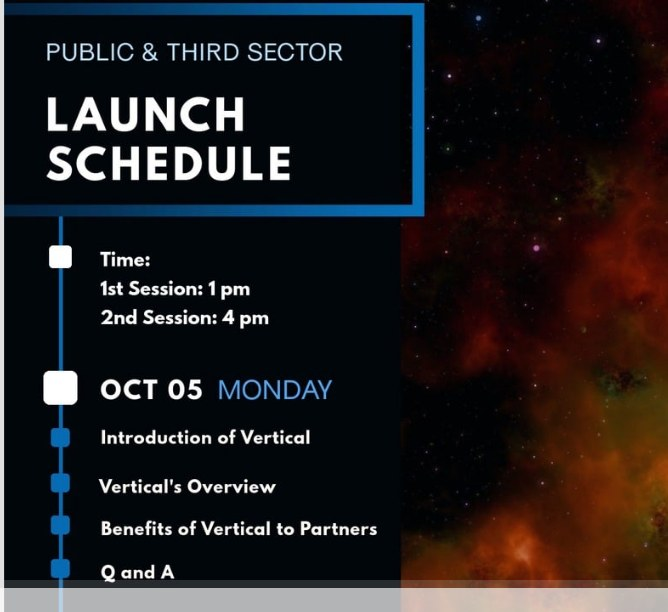
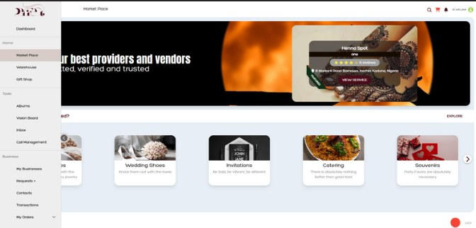
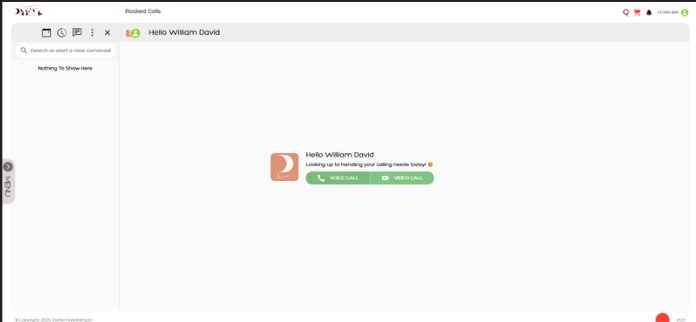
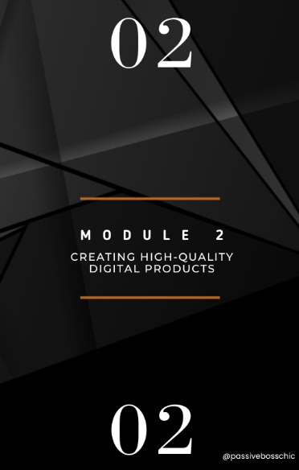
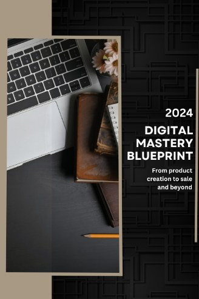

in motion.
Omolola Joseph
Growth & marketing strategist · Product systems builder
Thirteen years in digital marketing, now building the systems that deliver it.
I build proof,
not noise.
I design the platform a business runs on and the pipeline that fills it, working as product owner and builder in one. I write the requirements, data model and security rules myself, then ship with AI-assisted tools, which takes a product from idea to live in days rather than quarters.
Six chapters, one thread.
The vertical, built end to end.
I built ScaleSource's veterinary vertical from the ground up: the category position, the offer, the certification that differentiates it, and every asset used to take it to market.
The one claim no competitor could make. Month-to-month seat pricing, a 14-day go-live promise and a 30-day guarantee.
The 30 Seconds Calculator, carried by every outbound sequence. Two landing pages, two live sales demos and seven account-specific sales blueprints.
A LinkedIn calendar running five times a week across four series, plus carousels, infographics and motion on one fixed brand system.
Two 18-email sequences across 8,835 sends. Found only 33 of 174 contacts truly fit the ICP, and fixed duplicate SPF and DMARC records blocking sends.
A competitive landscape, an association partnership plan with drafted outreach, and expansion research into adjacent remote roles.
Designed a seven-tool Account Intelligence Engine (~$421 → ~$238 a month). A buyer-behaviour method cut 32,000 job postings to 12 qualifying firms.
VetPod Academy
A training and certification platform built from an 86-page manual, where remote candidates practise real clinic calls against an AI caller.
Built
- 11 modules, 47 lessons, 151 content blocks, 108 assessment questions
- One 80% standard, a 90-hour window and options reshuffled on every attempt
- QR-verifiable certificates with a public verification page
Voice AI
- AI caller with a hidden server-side persona across 10 scenarios
- GROQ: Whisper large-v3, gpt-oss-120b, Orpheus · ~$0.05 a call
- Graded on 10 categories, 20 points, pass at 16
One call, three reports
Staff Portal + Connect
The operations console behind the academy, and the portal where clinics hire from it: a ranked top four, through to placement.
Staff Portal
- Nine-tab candidate workspace and AI resume parsing under a strict-truth rule
- A course editor the team edits without a developer: versioning, draft and publish, drag-and-drop, media library
- Logged admin overrides: reopen a window, reset an exam, reset failed roleplays
- CSV and Excel reporting, a Customer Success queue, roleplay recordings
VetPod Connect
- Clinics submit a request and get a ranked top four, with reserves held
- Interview, offer and placement handoff, with rematch if all four are declined
- Google Calendar and Meet sync, magic-link login
- Salary is never exposed to clinics
Candidate Pool
The second-generation platform, matching by job role for every role ScaleSource places, with a match score anyone can open.
The real match formula · try it
The AI score is built from four parts (experience 5, skills 5, certifications 3, completeness 2) and totalled in code. Database triggers recalculate the match whenever a candidate or request changes.
Your bench, kept full.
A recruiting retainer for trade businesses in Northwest Arkansas: a screened local bench of workers and subcontractors, refilled after every hire.
The offer
- Five trades: landscaping, lawn treatment, irrigation, hardscape, tree care
- Starter, Growth and Full Team plans, flat monthly, month-to-month
- A written bench guarantee, a comparison against 28 alternatives, and a free Bench Audit
Billing that never double-charges
- QuickBooks Payments checkout, card or bank
- A daily billing run with one retry after 3 days and a pause after 2 failures or 10 days late
- Each charge has a fixed ID per subscription and period, so a rerun never bills twice
- A lead funnel that saves every step and mirrors to a sheet
Work, close to home.
The other side of the bench: crews, part-time help and subcontractors apply in two minutes, in English or Spanish.
Three ways in
- Full-time crew (W-2): steady weekly hours with a local company
- Part-time and overflow (1099): extra jobs when you have time
- Subcontractor company: steady commercial overflow work
Built for the people applying
- A 4-step application saved on the device as you go
- No resume needed, and a real person calls back within 2 business days
- The whole site in English and Spanish
- Feeds the same bench employers pay to keep full
The 30 Seconds Calculator
The argument the vertical sells on, as a tool: unanswered calls are a bill a clinic absorbs without approving it.
How it works
- Three inputs: calls a day, appointment value, days open
- Stated benchmarks: 70% answer rate, 25% booking conversion
- Shows its working, then offers a free diagnostic
- 80 calls × $150 × 22 days → $19,800 a month
The rest of the sales kit
- A second revenue-leak calculator as a standalone lead magnet
- Two landing pages: Front Desk Profit Engine and VetFlow Front Desk Fix
- Two interactive demos, warm and hot, used live on sales calls
- Seven account-specific blueprints for multi-site groups
GreyBarn Intelligence
A system of about thirty Claude skills that finds, validates and scores commercial landscaping accounts, then routes each one to the right salesperson. Every claim needs evidence, inference is labelled, and rejected records stop.
Finds candidate organisations by market, sales lane and vertical, from official sites, county records, procurement portals, credible news and directories. Directories are leads, never proof.
Eight gates must pass before an account is sales-ready. Statuses are Validated, Partially validated, Requires research or Rejected, and each comes with its evidence and reason.
A management company with fifteen properties is one account with fifteen linked properties, not fifteen leads. Owner and manager stay distinct, and nothing is silently merged.
Tracks buying signals such as RFPs, contract expiry, new properties, new managers and ownership changes, with observed evidence kept separate from inference. Public accounts get procurement intelligence and the original bid URLs.
Only validated accounts are scored, and every component is explained with its evidence. A is 75 and up, B is 60 to 74, C is below 60. The score prioritises, and it never replaces validation.
Each account lands in the right salesperson's lane with a sales action, a research log entry, and a next verification date, so the list stays fresh instead of rotting.
Problems solved. Tap to see the fix.
Feedback in, qualified leads out.
An end-to-end pipeline that reads every form response for sentiment, scores the lead, writes a personalised reply and tells the right person, in real time.
Campaign Predictor
Forecasts whether an ad campaign will succeed from budget, platform and audience, then reads how the ad copy feels. It connects numbers with emotions.
Two models, one insight
- Campaign success: a Random Forest on budget, duration, audience, channel and ad type
- Ad-copy sentiment: Positive, Neutral or Negative, with confidence
- A combined "Smart Campaign Insight" that reads both together
Stack
- Python, pandas, scikit-learn
- Plotly charts, comparing each campaign with the baseline
- Streamlit, deployed on Streamlit Cloud
- Git and GitHub
Thirteen years, five countries.
Content that moves quietly and travels far.
Four reels for TheHustlersTruth, a motivational brand for people taking their first clear steps online. Almost every view came from people who didn't follow the page.
When Death Finds Me
- Non-followers
- 98.4%
- Shares
- 1,000+
- Saves
- 1,200+
- New followers
- 250+
I Don't Want Revenge
- Non-followers
- 97.4%
- Shares
- 1,800+
- Saves
- 1,200+
- New followers
- 274
We Need You
- Non-followers
- 98.8%
- Shares
- 3,800+
- Saves
- 752
- New followers
- 229
My Tears Speak
- Non-followers
- 97.5%
- Shares
- 358+
- Saves
- 412+
- New followers
- 48
Before the platforms, the launches.

Public Sector Vertical Launch
The campaign that launched a public and third sector vertical: teasers, countdowns and a launch-day schedule for partners.


PerfectWedding.io ↗
A wedding management platform: I designed the full app layout and UX, and set its market-entry strategy.


Digital Mastery Blueprint
A digital product and companion guides on creating high-quality digital products.
TheHustlersTruth ↗
A quiet brand built to help people start online: a free 5-Day Starter Challenge, the Hustler's Guide, and content strategy and automation behind it.
What I build with.
Growth systems
Prospect intelligence · Enrichment & routing · Funnel design & CRO · ICP definition · Paid social & search · Outbound sequencing · SPF / DKIM / DMARC · A/B testing · SEO
Product & backend
Requirements · Data modelling · Security rules · QA & UAT · Supabase · PostgreSQL · Row-level security · Edge functions · pg_cron · Vault
AI
Claude · GROQ (Whisper, gpt-oss-120b, Orpheus) · OpenAI API · Prompt engineering · Voice AI · Python · scikit-learn · Streamlit
Front end & tooling
React · TypeScript · Lovable · Google Calendar, Meet & Drive APIs · Resend · QuickBooks Payments · n8n · Clay · Apollo · HubSpot · Meta & Google Ads
Certification
Claude, Next Gen AI Assistant (Anthropic / Coursera, 2025) · Prompt Engineering (Vanderbilt, 2025) · Elements of AI (Helsinki, 2025) · ML, Data Viz and Deep Learning (Kaggle) · Funnel Building (Systeme.io) · Social Media (HubSpot) · Google Ads Search
Education
BTech, Mathematics & Computer Science, Federal University of Technology, Minna
Diploma, Leadership & Team Management, IBMI Berlin
Professional Diploma, Digital Marketing, Shaw Academy